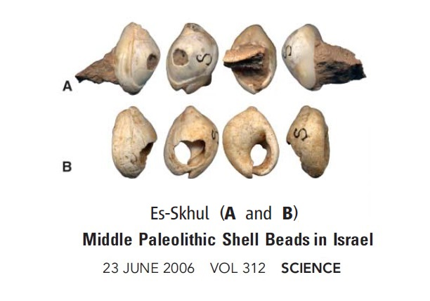

|
Back to Homepage
Part 5 The Journey fromthe Garden of Edento the world
Page 1 out of Africa
In the 22005, the huge multinational cooperative project "Genographic Project" involving 10 prestigious research organizations was launched. The total funding of 40 million dollars came from National Geographic Society, IBM and the Waite Family Foundation. By 2010, this organization had collected DNA samples from 100,000 people around the world. Based on these samples, the map of human migration was depicted.
锟斤拷. Looking for Mankind's Garden of Eden
Once the molecular anthropologists found the Y chromosome Adam and the Mitochondrial Eve, it was natural for them to ask the questions: which region on earth did they grow up in? Would it be possible to use DNA decoding to look for this place? Yes, we can.
1. The bottleneck effect in molecular anthropology

Figure 5-8 Human beaded necklaces made from shells 100,000 years ago
However, in this and surrounding regions, no one has found evidence of the ancient life in period of the tens of thousands after 100,000 years. Their descendants have disappeared. How did they get here? Where did their descendant go? To resolve this mystery, archeologists started logical analysis of the natural and geological environment 100,000 years ago.
As we have mentioned earlier, the discovery of the ancient Herto fossils from 160,000 years ago is sufficient evidence that they are our ancestors from the Great Rift Valley, the place of origin, to the northern part of Africa. However, in the next 30,000 years, they could not migrate to more distant places because on their east is the ocean and the north, the Sahara Desert. Thousands of KM of desert is a greater barrier than the ocean.
Recently, the establishment of a computer mathematical modeling based on material from archeological and geographical research, researchers found that 125,000 years ago the climate in North Africa had changed dramatically. Within a few thousand years, the desert became an oasis filled with birds and animals, a picture of life. This dramatic change in climate brought many opportunities to the inhabitants. They must have gradually moved closer to the northern part of the continent with such livable conditions. After thousands, even tens of thousands of years, and many generations, finally, they left the African continent and entered Asia and reached modern day Israel where they settled and reproduced (Reference 4).
However, after 20,000 to 30,000 years, the climate had undergone another change. This time, it brought bad luck to the descendants of the original immigrants. This climate change ushered in a period of drought and desert-like condition to Israel and the northwest region in Asia and the North Africa region. When faced with less and less rainfall, dry grass, and animals dying off, these ancient people had no way to go or retreat from. The once thriving immigrant communities eventually faced complete extinction.
|